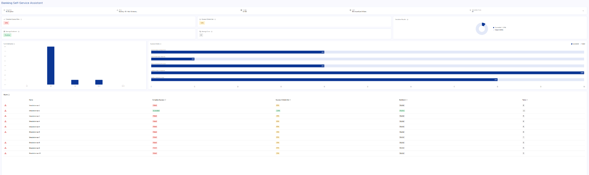
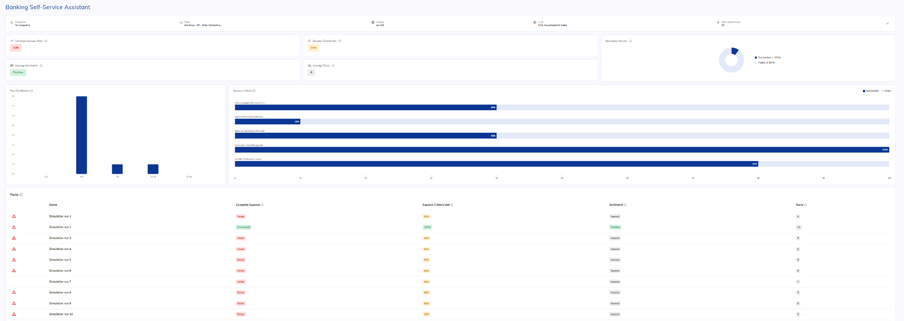

Where Cognigy fits
Cognigy is the AI orchestration layer between customer channels, Genesys and Legal & General’s enterprise services.
Presenter cheat sheet
- Cognigy sits between customer channels and enterprise systems as the AI orchestration layer.
- The selected CCaaS platform continues to own routing, queues, recording and agent delivery.
- Enterprise systems remain the source of truth for customer and business data.
- Cognigy coordinates AI, knowledge and approved tools, then hands context back to a live agent when needed.
- The objective is to enhance the existing estate rather than replace it.
Cognigy
- AI orchestration
- AI Agents and knowledge
- Tool and API execution
- Guardrails and analytics
Genesys Cloud
- Owns voice and digital channel entry
- Provides routing, queues and agent delivery
- Connects to Cognigy for automated AI interactions
- Supports live-agent handover with context
Genesys / channel platform
- Voice and digital channel entry
- Routing and queues
- Recording and agent desktop
- Live-agent delivery
Legal & General
- Systems of record
- Identity and API policy
- Business rules and data
- Retention requirements
Common questions
Does Cognigy replace the contact-centre platform?
Does Cognigy replace our CRM or policy platform?
Can the same AI Agent be reused across channels?
How Cognigy fits across the wider ecosystem
A single view of channels, CCaaS, Cognigy, AI services, tools and enterprise systems.
Presenter cheat sheet
- Cognigy is the central orchestration layer connecting channels, AI models, tools and enterprise systems.
- It is model agnostic, so providers can be changed without redesigning the whole application.
- REST APIs, MCP servers, RAG services and custom tools can all be orchestrated by the same AI Agent.
- Channels and backend systems remain decoupled, making the architecture easier to evolve.
- This provides flexibility today while reducing future migration effort.

Channels
- Voice, web, messaging and mobile
- Typically owned by Genesys or another channel platform
Cognigy
- AI Agents and orchestration
- Knowledge, tools, guardrails and analytics
Enterprise systems
- CRM, policy, claims and payments
- Remain the systems of record
AI services
- LLM and speech providers
- Provider-agnostic and selected by architecture
Common questions
Can we use different LLM or speech providers?
Can Cognigy use REST APIs, MCP and custom tools together?
Do enterprise systems need to change?
How Cognigy is hosted and operated
A concise view of the SaaS deployment model, operational responsibility, resilience and regional considerations.
Presenter cheat sheet
- Cognigy is delivered as a fully managed SaaS platform hosted in NiCE-managed AWS.
- Kubernetes and independently deployable services provide scalability, resilience and rolling upgrades.
- For a typical UK deployment, London is the primary region and Ireland is the paired backup region; the contracted topology must be confirmed.
- The design environment is separated from the live runtime, so new versions can be prepared without disrupting active conversations.
- NiCE manages the platform; the customer manages AI configuration, integrations and business data.

Standard deployment
- NiCE-managed Cognigy SaaS
- Hosted in AWS
- Kubernetes-based microservices platform
- No new on-premises deployments
Example UK deployment
- Primary: AWS Europe (London), eu-west-2
- Paired backup region: AWS Europe (Ireland), eu-west-1
- Confirm the exact topology for the contracted environment
NiCE operates
- AWS infrastructure and Kubernetes
- Patching, upgrades and platform monitoring
- Scaling, backup and disaster-recovery processes
Customer operates
- AI Agents, prompts and knowledge
- Business integrations and API policy
- Data classification and retention requirements
High availability
- Kubernetes self-healing
- Independent service scaling
- Rolling upgrades
- Managed monitoring and alerting
Confirm during design
- Contracted hosting model
- Primary and paired regions
- RPO and RTO commitments
- Sovereign-cloud requirements
- Data-residency obligations
Common questions
Where is Cognigy hosted?
What is the typical UK regional model?
Who operates the platform?
CCaaS integration
Genesys integration cheat sheet
Digital integration
Build the AI experience in Cognigy
The Cognigy Flow, AI Agent, knowledge, tools and business logic are created and tested in Cognigy.
NiCE/Cognigy can support thisCreate the Cognigy Genesys Endpoint
The Flow is exposed through a Cognigy Genesys Endpoint, which provides the endpoint URL and verification token required by Genesys.
Configured in CognigyConfigure the Genesys Bot Connector
The customer’s Genesys team installs and configures the Bot Connector using the Cognigy Endpoint URL and verification token.
Customer / Genesys responsibilityBuild the Genesys Architect messaging Flow
The customer creates the inbound messaging Flow in Genesys Architect and adds the Call Bot Connector action.
Customer / Genesys responsibilityConfigure routing and live-agent handover
Genesys controls the success, failure and Transfer to ACD paths, including the queue and agent-delivery logic.
Customer / Genesys responsibilityVoice integration
The call enters through Genesys
Genesys owns the PSTN/SIP ingress, call control, recording and initial routing decision.
Customer / Genesys responsibilityRoute the call to Cognigy Voice Gateway
The customer’s Genesys and telephony teams configure the agreed SIP or voice-routing path to Cognigy Voice Gateway.
Customer-led, with NiCE/Cognigy design supportConfigure the Cognigy voice experience
Voice Gateway, speech providers, the Cognigy Flow and AI Agent behaviour are configured in Cognigy.
NiCE/Cognigy can support thisCognigy handles the automated conversation
Cognigy manages speech orchestration, AI reasoning, knowledge and approved backend actions during the automated part of the call.
Cognigy responsibilityTransfer back to Genesys when required
The customer configures the transfer destination, Genesys queue and live-agent routing. Context handover is agreed as part of the solution design.
Customer / Genesys responsibilityDigital interaction
Digital cheat guide
- Create a Cognigy Genesys Endpoint and select the Flow.
- Copy its endpoint URL and create the verification token.
- Install the Genesys Bot Connector.
- Configure the endpoint URL and token in Genesys.
- Add Call Bot Connector in the Architect inbound-message Flow.
- Add success, failure and Transfer to ACD paths.
Digital ownership
- Genesys: channel entry, messenger session, routing and agent queue.
- Cognigy: automated AI dialogue, knowledge, tools and business orchestration.
- L&G: customer data, identity, policies and backend decisions.
Voice interaction
Voice cheat guide
- Genesys receives and controls the call.
- The call is routed to the agreed Cognigy voice entry point.
- Voice Gateway manages speech services and connects to the Cognigy Flow.
- Cognigy handles dialogue and approved backend actions.
- When required, the call and available context are handed back to Genesys for agent routing.
Voice ownership
- Genesys: PSTN, call control, queueing, recording and agent delivery.
- Cognigy: automated voice conversation and orchestration.
- Shared design: SIP/media path, transfer method, context handover and failure behaviour.
Common questions
Who configures Genesys?
Is digital configured the same way as voice?
Who owns live-agent routing?
How Cognigy securely connects to enterprise services
Use the standard REST pattern where possible. Expand the alternatives only when stricter network or exposure requirements apply.
Standard connectivity
Standard Connectivity — Presenter Cheat Sheet
Use this when explaining the normal enterprise deployment.
- The standard integration pattern is outbound REST over HTTPS from Cognigy SaaS to approved enterprise APIs.
- The customer secures those APIs using OAuth, API keys, an API Gateway, WAF policies, IP allowlisting and least-privilege permissions.
- Cognigy never receives unrestricted network access; it can only call the APIs and tools that have been explicitly configured.
- This is the recommended architecture and the normal pattern for most enterprise Cognigy deployments.
- No direct database access is normally required because Cognigy communicates through governed enterprise APIs.
REST over HTTPS Standard
What it is
Cognigy sends an outbound HTTPS request to an approved REST endpoint.
How it works
A Flow node or tool sends GET, POST, PUT, PATCH or DELETE requests through the customer’s governed API layer.
Typical controls
- Trusted TLS certificate
- OAuth 2.0 or API key
- WAF and rate limits
- Cognigy egress-IP allowlisting
Best suited to
Most enterprise integrations where a governed API can be securely reached from SaaS.
Authentication and credentials Standard
Supported approaches
- OAuth 2.0 / bearer tokens
- API key / X-API-Key
- Basic authentication
- Custom headers
Credential handling
Credentials are stored in encrypted Cognigy Connections and should be separated by environment.
Recommended design
- Least-privilege scopes
- Short-lived tokens
- Separate production credentials
AI and API guardrails Standard
Restricted tools
The AI can only use tools and Flow nodes explicitly configured for the use case.
Deterministic gates
Authentication, payments and high-risk actions can require rule-based validation.
Operational controls
- Timeouts and retries
- Error handling
- Logging controls
- Auditable execution
When standard REST connectivity isn't possible
When Standard REST Connectivity Isn't Possible — Presenter Cheat Sheet
Use this when the customer says, “We do not want to expose our internal APIs to the internet.”
- The first recommendation is normally an Integration Gateway or Relay Service rather than exposing internal systems directly.
- Cognigy calls the gateway over HTTPS; the gateway authenticates and validates the request, then communicates privately with internal applications.
- Enterprise middleware such as MuleSoft, Boomi or Azure Integration Services can perform the same role while adding transformation, orchestration and governance.
- Custom Cognigy Extensions can simplify specialist integration logic or authentication, but they do not create private network connectivity. The customer owns and maintains the custom code.
- VPN, dedicated networking or sovereign deployment options should only be considered where standard integration patterns are unsuitable and require NiCE/Cognigy architecture validation.
Use these when core services should not be directly exposed through the standard public REST pattern.
Integration Gateway (Recommended) Preferred alternative
What is it?
A small, controlled API layer that sits between Cognigy and the customer's internal applications. It can be an API Gateway, a DMZ service or a lightweight relay.
How does it work?
Cognigy sends an outbound HTTPS request to the Integration Gateway. The gateway authenticates and validates the request, then calls the internal system over the customer's private network.
Why use it?
- Core internal systems remain private
- Only approved operations are exposed
- OAuth, WAF, rate limits and allowlisting are centralised
- Requests can be logged and audited
Who owns it?
The customer normally owns and operates the gateway. NiCE/Cognigy helps define the required interface and configures the Cognigy-side integration.
Enterprise Middleware / iPaaS Alternative
What is it?
An enterprise integration platform such as MuleSoft, Boomi, Azure Integration Services or another middleware layer.
How does it work?
Cognigy calls the middleware over HTTPS. The middleware validates, transforms and orchestrates the request before calling internal services privately.
When is it useful?
- Several internal systems must be coordinated
- Payload or protocol transformation is required
- Integration governance is already centralised
- The customer wants one reusable integration layer
Who owns it?
The customer owns and maintains the middleware platform and internal integration logic.
Custom Cognigy Extension Custom code
What is it?
Customer-developed JavaScript or TypeScript code packaged as a reusable Cognigy Flow Node, integration or Knowledge Connector.
How does it work?
The Extension is uploaded into Cognigy and used inside a Flow to perform custom authentication, call third-party SDKs, transform payloads or encapsulate reusable logic.
Important limitation
An Extension does not create a private network route. It still needs a reachable API, service or middleware relay.
Customer responsibility
- Source code and repository ownership
- Security review and testing
- Dependency and compatibility updates
- Ongoing support and maintenance
Private Connectivity (Special Design) Requires validation
What is it?
A non-standard network design that could involve VPN, private routing, dedicated infrastructure or a sovereign deployment arrangement.
When would it be considered?
Only when an Integration Gateway or enterprise middleware cannot satisfy the customer's security, regulatory or architectural requirements.
What must be confirmed?
- Hosting and networking model
- Security and support ownership
- Commercial implications
- Availability in the selected region
Positioning
This is not standard shared-SaaS functionality and requires formal validation with NiCE/Cognigy Architecture.
Common questions
Do internal APIs have to be fully public?
Can Cognigy connect through a VPN by default?
Can a Cognigy Extension create private connectivity?
Who maintains a custom Extension?
Microsoft Dynamics 365 and Salesforce
Connect Cognigy AI Agents to CRM data, workflows and customer-engagement channels while the CRM remains the system of record.
Presenter cheat sheet
- Cognigy sits alongside Dynamics 365 or Salesforce as the conversational AI and orchestration layer.
- The CRM remains the system of record for customer, account, case, sales and service information.
- Cognigy can retrieve CRM data, create and update records, and write interaction outcomes back to the customer timeline.
- The integration is bidirectional: conversations can trigger CRM actions, and CRM events can initiate proactive journeys.
- CRM communication capabilities can be used as channels or agent workspaces while Cognigy provides the automated AI experience.
- Access should be limited to approved objects, fields and operations using OAuth and least-privilege permissions.
Talk track
“Cognigy does not replace Dynamics 365 or Salesforce. It provides the conversational layer that allows customers and employees to interact naturally with the CRM. The AI Agent can retrieve approved information, complete governed updates, create service records and preserve context when the conversation moves to a human agent.”
Objective
Explain the four ways Cognigy interacts with enterprise CRM platforms.
Talk track
- Pull: retrieve approved customer, account, case or opportunity information.
- Push: create, update or close CRM records through governed APIs.
- Embed: surface AI capabilities inside the existing service or sales workspace.
- Trigger: use CRM events to initiate proactive WhatsApp, SMS, email or voice journeys.
Key takeaway
The CRM owns the record; Cognigy owns the conversation and AI orchestration.
Microsoft Dynamics 365
- Dataverse and standard or custom tables
- Customer Service, Sales and Field Service scenarios
- Contacts, accounts, cases, activities and opportunities
- Microsoft channels and agent workspace integration
Salesforce
- Standard and custom Salesforce objects
- Service Cloud and Sales Cloud scenarios
- Contacts, accounts, cases, leads and opportunities
- Digital Engagement and agent workspace integration
Objective
Show how Cognigy securely retrieves CRM information during a live conversation.
Talk track
- The AI Agent establishes intent and performs identity verification where required.
- Cognigy calls an approved CRM API or middleware service using a governed Connection.
- Only permitted records and fields are returned and used to answer the customer.
- Transient data should be retained only for as long as required by the conversation and policy.
Key takeaway
The AI receives useful CRM context without broad or unrestricted platform access.
Dynamics 365 — common retrievals
- Contact and account profile
- Active cases and status
- Activities and interaction history
- Orders, entitlements or service records
- Opportunities and sales context
- Custom Dataverse tables
Salesforce — common retrievals
- Contact and account profile
- Cases and service history
- Tasks, events and activities
- Leads and opportunities
- Knowledge and entitlement context
- Custom Salesforce objects
Objective
Explain how Cognigy completes governed CRM actions rather than only answering questions.
Talk track
- The AI Agent gathers and validates the information required for the action.
- Deterministic rules can check identity, mandatory fields, consent and eligibility.
- Cognigy calls the approved CRM operation and confirms the result from the CRM response.
- Sensitive changes can require explicit confirmation or human approval.
Key takeaway
Generative AI manages the conversation; deterministic controls govern the transaction.
Create
- Case or complaint
- Lead or opportunity
- Callback or appointment
- Interaction record
Update
- Contact details
- Case status or notes
- Lead qualification
- Conversation summary
Complete or close
- Resolve a case
- Complete an activity
- Close a task
- Record an outcome
Governance controls
- Identity verification
- Customer confirmation
- Field validation
- Audit trail
Objective
Explain how CRM platforms participate in the customer channel and agent experience.
Talk track
- Cognigy handles automated voice and digital conversations before human handover.
- The CRM workspace can receive transcript, identity, intent and business context.
- Where the CRM provides messaging or agent-channel capabilities, Cognigy integrates into that wider architecture.
- Channel ownership, routing and agent desktop configuration remain customer responsibilities.
Key takeaway
Cognigy enhances the CRM channel experience while agents remain in their familiar desktop.
Dynamics 365 channel patterns
- Dynamics 365 Customer Service workspace
- Omnichannel or connected digital messaging
- Embedded chat or messaging experiences
- Case timeline and activity updates
- Agent Assist surfaced in the workspace
Salesforce channel patterns
- Service Cloud workspace
- Digital Engagement and messaging
- Omni-Channel routing
- Case feed and interaction timeline
- Embedded AI or Agent Assist experience
Objective
Show how CRM events can initiate proactive, personalised AI journeys.
Talk track
- A CRM event, workflow or campaign identifies that customer action is required.
- An approved communications platform starts a WhatsApp, SMS, email or voice interaction.
- Cognigy handles the personalised conversation and retrieves additional CRM context.
- The outcome, consent and next action are written back to the CRM.
Key takeaway
The CRM triggers the journey, Cognigy conducts the conversation, and the outcome returns to the CRM.
Objective
Compare the platforms without positioning one as superior.
Talk track
- Both platforms support governed, bidirectional API integration.
- Dynamics uses Dataverse and Microsoft service components; Salesforce uses standard and custom objects across its clouds.
- The right design depends on the customer’s data model, licences, channel architecture and integration standards.
Key takeaway
Cognigy follows the customer’s CRM architecture rather than imposing a proprietary data model.
| Capability | Microsoft Dynamics 365 | Salesforce |
|---|---|---|
| Customer and account lookup | Contacts and Accounts | Contacts and Accounts |
| Service records | Cases and Customer Service tables | Cases and Service Cloud objects |
| Sales records | Leads and Opportunities | Leads and Opportunities |
| Custom data model | Custom Dataverse tables | Custom Objects |
| API integration | Dataverse and Dynamics APIs | Salesforce APIs |
| Authentication | OAuth through Microsoft identity services | OAuth through Salesforce connected applications |
| Agent workspace | Dynamics 365 Customer Service | Salesforce Service Cloud |
| Digital engagement | Customer Service and connected channels | Digital Engagement and Omni-Channel |
| Proactive journeys | CRM workflows and Microsoft automation services | CRM automation, events and campaign workflows |
Common questions
Does Cognigy replace Dynamics 365 or Salesforce?
Can Cognigy read and update CRM data?
Can the AI update records automatically?
Does the CRM need to be exposed directly to the internet?
Can CRM events start an outbound conversation?
Can agents remain inside their CRM desktop?
Who configures the CRM?
AI Ops Centre
Move through platform health, component performance, alerting and root-cause analysis without scrolling through one long page.
Presenter cheat sheet
- As AI Agents scale, the challenge moves from building them to operating them reliably 24/7.
- Ops Centre provides one place to understand traffic, latency, component health and errors.
- Alerts help teams move from reactive firefighting to proactive intervention.
- When something fails, teams can isolate whether the issue sits with an endpoint, Flow, transformer, API or provider.
- The outcome is operational confidence to scale AI safely.
Opening narrative
“As organisations deploy more AI Agents, three challenges emerge: managing scale, maintaining visibility and controlling operational risk. Ops Centre applies the same operational disciplines used for a human workforce to an AI workforce.”

Objective
Introduce the overall health of the AI estate and show that operations teams have a single operational view.
Talk track
- This is the operational dashboard for the AI workforce, showing traffic, errors, alerts and component health in one place.
- Red indicators immediately highlight where investigation is required, while healthy services remain visible alongside them.
- The aim is to identify emerging issues before customers notice a degradation in service.
Key takeaway
Operations teams have immediate visibility into the overall health of every AI Agent and its supporting services.

Objective
Show how individual customer endpoints and preprocessing components are monitored.
Talk track
- Here we can monitor endpoint traffic, message-processing time and transformer performance.
- If response times begin to increase, we can determine whether the issue starts at the channel endpoint or during transformation.
- Error counts and latency trends allow teams to isolate affected channels without treating the whole platform as one black box.
Key takeaway
Endpoint and transformer issues can be isolated before they affect the wider AI estate.

Objective
Demonstrate end-to-end monitoring across every component involved in an Agentic AI interaction.
Talk track
- Cognigy monitors each execution component separately, including Flow runtime, outbound API calls, Knowledge AI, NLU and LLM activity.
- For each component we can inspect volumes, processing time, latency and failures to identify exactly where performance is degrading.
- This is especially important for Agentic AI because one customer response may depend on several reasoning steps, tool calls and external services.
Key takeaway
Cognigy provides component-level observability across the full Agentic AI execution path, making latency and dependency issues easier to identify.

Objective
Show how teams move from passive monitoring to proactive alerting.
Talk track
- Alert categories can be enabled for meaningful operational conditions such as message spikes, HTTP failures, transformer errors or LLM issues.
- Teams decide which conditions matter rather than receiving noise for every minor fluctuation.
- This allows operations to respond before a technical issue becomes a visible customer problem.
Key takeaway
Operational teams are alerted to meaningful changes before customers are affected.

Objective
Show how Cognigy alerts integrate into existing operational processes.
Talk track
- Notifications can be delivered by email for direct operational awareness.
- Webhook delivery allows Cognigy alerts to feed existing ITSM, incident-management or observability platforms.
- The AI estate can therefore be managed through the same operational workflows already used elsewhere in the organisation.
Key takeaway
AI monitoring fits into existing enterprise support and incident-management processes.

Objective
Demonstrate fast root-cause analysis when an issue occurs.
Talk track
- Each error identifies the code, message, project, Flow and node involved.
- Teams can move directly from the operational symptom to the exact component that requires attention.
- This reduces time spent searching through logs and accelerates recovery.
Key takeaway
Faster root-cause isolation means faster resolution and less customer impact.
Common questions
What does Ops Centre monitor?
Can alerts feed existing tooling?
Why is component latency important for Agentic AI?
Insights & Agentic Analytics
Move through operational reporting, conversation detail, configuration and AI analysis using the sub-tabs.
Presenter cheat sheet
- Operational reporting shows adoption, containment, engagement and conversation volumes.
- Conversation views provide transcript and metadata visibility for quality and investigation.
- Agentic Analytics evaluates LLM-powered conversations for topics, sentiment, escalations, resolution and custom criteria.
- Analysis can be scheduled for selected channels, endpoints or AI Agent versions.
- Analytics APIs allow this data to be combined with wider enterprise BI and outcome reporting.
Opening narrative
“Operational metrics only tell part of the story. Agentic AI introduces new questions around reasoning quality, new customer topics, knowledge gaps and whether the interaction delivered a meaningful outcome.”

Objective
Establish the scale, adoption and operational performance of the AI estate.
Talk track
- The Overview shows session volumes, containment, channel mix and usage trends.
- It provides the executive-level operational picture before moving into deeper engagement or quality analysis.
- This answers the first question: how much is the AI being used and how much demand is it handling?
Key takeaway
Start with adoption and operational performance before assessing conversation quality.

Objective
Show how customers are engaging with the AI and where journeys move to a human agent.
Talk track
- Engagement metrics show session length, containment and handover behaviour over time.
- These trends help identify where customers remain engaged and where automation breaks down.
- The data can reveal journeys that need optimisation or further automation.
Key takeaway
Engagement reporting explains how customers use the AI and where escalation occurs.

Objective
Connect aggregate analytics back to the underlying customer conversation.
Talk track
- The Conversations view provides session metadata, message counts, timestamps and analysis status.
- Teams can open the full transcript to understand the context behind a metric or result.
- This makes analytics transparent and traceable down to the individual interaction.
Key takeaway
Every insight can be investigated against the original conversation.

Objective
Show how Agentic Analytics is targeted and scheduled.
Talk track
- Analysis can be scheduled daily or weekly for a specific endpoint, channel, snapshot or AI Agent version.
- Customers can enable standard criteria and add custom evaluations aligned to their own objectives.
- This ensures the analysis is focused on the exact experience being measured.
Key takeaway
Analytics can be tailored to the right Agent, channel, version and business objective.

Objective
Reveal what customers are actually asking about, including unexpected topics.
Talk track
- Topic Discovery groups conversation drivers into parent and child themes.
- It highlights coverage, overlap and new topics that were not part of the original design.
- These findings identify knowledge gaps and new automation opportunities.
Key takeaway
Topic discovery turns real conversations into a roadmap for improvement.

Objective
Evaluate the quality and behaviour of LLM-powered conversations.
Talk track
- Basic Analysis reviews sentiment, emotional intensity, escalation risk and resolution.
- It also evaluates instruction following and whether tools were used correctly.
- This goes beyond operational reporting and measures how well the Agentic AI behaved.
Key takeaway
Agentic Analytics evaluates conversation quality, not just volume and containment.

Objective
Measure AI performance against organisation-specific outcomes.
Talk track
- Custom evaluations can score reasoning quality, recovery from failure, information gathering and business outcomes.
- The measures can reflect regulatory, service or commercial priorities.
- This allows AI performance to be assessed against what the organisation actually values.
Key takeaway
Custom evaluation connects AI behaviour directly to business objectives.
Common questions
What is the difference between Insights and Agentic Analytics?
Can analysis target a specific Agent version?
Can the data be exported to enterprise BI?
Simulator
Use the tabs below to move between scenario design, scale testing and results without scrolling through one long page.
Presenter cheat sheet
- Agentic AI creates thousands of possible outcomes, making traditional manual UAT impractical.
- Simulator creates realistic tests using personas, missions and measurable success criteria.
- Scenarios can be created manually, from transcripts or from the AI Agent prompt.
- Large volumes of simulated conversations can test edge cases and regressions quickly.
- The outcome is repeatable automated QA as prompts, knowledge, tools or models change.
Opening narrative
“With traditional bots, testers validated a limited number of predefined paths. Agentic AI can reason, adapt and call tools, so testing every possible outcome manually is no longer practical.”

Objective
Show how realistic customer scenarios and measurable test criteria are created.
Talk track
- The persona defines how the simulated customer behaves, while the mission defines what they are trying to achieve.
- Success criteria describe exactly how the AI Agent should be judged.
- Scenarios can be built manually, from transcripts or from the Agent prompt.
Key takeaway
Simulator tests realistic customer behaviour against business-defined success criteria.
Question: How do we create realistic tests?
- Create scenarios manually, from transcripts or from the AI Agent prompt.
- Define personality traits and expected customer behaviour.
- Define the mission and measurable success criteria.

Objective
Demonstrate automated testing at a scale that manual UAT cannot achieve.
Talk track
- Multiple conversations can be run simultaneously against the same scenario.
- This produces evidence across different responses, edge cases and reasoning paths.
- Testing can be repeated whenever prompts, models, tools or knowledge change.
Key takeaway
Automated simulation turns large-scale UAT into a repeatable process.

Objective
Show how test failures are identified and used to improve the AI Agent.
Talk track
- Results are broken down by success criterion, run status, sentiment and turn count.
- Teams can identify which criteria failed and open the underlying simulated conversation.
- The feedback can then be used to refine prompts, knowledge or tool behaviour.
Key takeaway
Simulator explains where and why an Agent failed, not simply that it failed.
Alternative results screenshot
Common questions
How are scenarios created?
What does Simulator evaluate?
Why run simulations regularly?
InfoSec, data governance and enterprise assurance
Use the tabs below to move between data handling, security architecture, compliance and post-interaction governance.
Presenter cheat sheet
- Cognigy is an enterprise-grade SaaS platform with controls across infrastructure, platform and application layers.
- Core customer and business data remains in the customer’s own systems; Cognigy is not the system of record.
- Data is protected through encryption, access controls, secure credentials, retention policies, masking and redaction.
- Transcripts, tool calls and API actions can be logged and audited for operational and compliance purposes.
- Cognigy operates under formal security and compliance programmes, including ISO 27001 and SOC 2 Type II.
Talk track
“Cognigy is designed to help organisations adopt AI without losing control of data, security or governance. The platform secures the underlying service, while customers retain ownership of their business data, policies and access rules.”
Objective
Explain how Cognigy handles operational data while the customer retains ownership of core business data.
Talk track
- Cognigy is not a CRM, policy or claims platform; those systems remain the source of truth.
- Cognigy may store operational data such as transcripts, logs and analytics according to configured retention policies.
- Sensitive values can be masked, redacted or removed, while expired data can be deleted automatically using TTL policies.
Key takeaway
Cognigy processes and orchestrates interactions, but long-term ownership of business data remains with the customer.
Data ownership
- Core records stay in customer systems
- Accessed through approved integrations
Retention
- Configurable policies
- Automatic deletion when TTL expires
- Aligned to customer policy
Masking & redaction
- Mask sensitive values
- Avoid unnecessary PII
- Overwrite data when no longer needed
Objective
Show that security is applied through a defence-in-depth model rather than a single control.
Talk track
- Data is encrypted in transit and at rest, while credentials are stored in secure Connections.
- Access is governed using RBAC, MFA and auditable administrative access.
- Infrastructure, platform and runtime controls are continuously monitored and supported by operational security processes.
Key takeaway
Security is built across the full lifecycle of the platform and the data it processes.
Infrastructure
- NiCE-managed AWS
- Network isolation
- Monitoring and detection
Platform
- Tenant separation
- Encryption
- Secure credential storage
Access
- RBAC
- MFA
- Auditable administration
Operational
- Penetration testing
- Security training
- Formal oversight
Objective
Explain how customers can independently assess Cognigy’s security and compliance posture.
Talk track
- Cognigy operates formal security and compliance programmes that are independently audited.
- High-level assurance includes ISO 27001, SOC 2 Type II and support for UK GDPR obligations.
- Detailed reports and evidence are provided through the official trust and due-diligence process.
Key takeaway
Security and compliance are continuously governed and independently assured.
Objective
Explain how visibility, auditability and continuous improvement continue after interactions complete.
Talk track
- Transcripts can support quality assurance, operational monitoring and compliance review.
- Fallbacks, escalations, API calls and tool actions can be logged and audited.
- Real interaction data can help refine prompts, knowledge, fallback behaviour and evaluation criteria.
Key takeaway
Governance continues after go-live through monitoring, auditability and structured optimisation.
Transcripts
- Quality review
- Compliance verification
- Behaviour investigation
Escalation monitoring
- Track human handovers
- Track deterministic fallbacks
- Identify automation gaps
Tool & API governance
- Log tool executions
- Trace API activity
- Support assurance
Continuous improvement
- Refine prompts
- Improve knowledge
- Adjust fallback behaviour